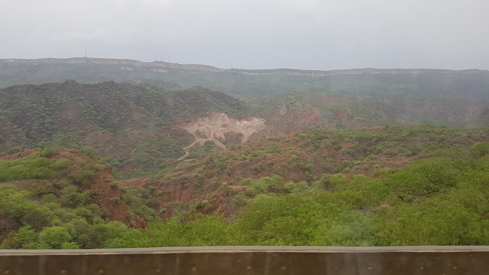

매일 같이 짐을 싸고 떠나는 삶
2017년 05월 21일
파키스탄
매일매일 짐을 싸고 풀고, 또 다시 짐을 싸는 삶이다. 아침에 일어나자 마자 떠나기 위해 짐을 쌌다. 그렇게 싼 짐, 고작 어깨 하나로 멜 수있는 양의 짐으로 짧게는 수 개월 혹은 평생을 지낼 수 있다는것이 새삼 놀랍다. 내 집에 있는 수많은 물건들이 생각이 난다. 과연 그것들이 모두 필요한가. 우리 삶에는 생각보다 많은 물건들이 필요하지 않은것 같다.
더위 때문에 우리는 거의 잘 수가 없었다. 나는 그나마 4시간은 눈을 붙인것 같다. 5시정도에 하나둘씩 깻는데 옥상에는 비가오고 있어서 그나마 시원했다. 우리는 옥상에서 잠시 쉰뒤 그냥 버스 정류장으로 가서 쉬기로 했다. 어제 그 친구를 만나서 예약도 하고 얼마나 다행인지 모른다. 파키스탄 여행은 이렇게 현지인의 도움을 많이받아 쉽게 진행될듯 하다.
릭샤를 300에 타려고 했는데 350을 부른다 우리가 검색했던 적정가격이기도 하고 이른아침이라 더 찾기 힘들기도 하고 왠지 파키스탄 사람들은 사기치지 않을것 같아서 350에 버스정류장으로 향하기로 했다. 버스정류장 이름은 대우 버스 정류장이다. 우리나라 그 대우가 맞다. 새로 지은 정류장이라 새건물이었다. 이곳이 파키스탄인지 의심스러울 정도로 깨끗했다. 사람들도 인도와는 다르게 깨끗하고 부유해보였다. (파키스탄에는 맨발로 다니는 사람이 없다) 일단 예약 했던 버스표를 구매하려고 갔다. 우리가 예약한 버스는 9시15분 출발 버스였는데 날씨때문에 취소 되었다고 한다. 하지만 아무 문제없이 다른 버스 티켓을 구매할 수있었다. 1500루피 짜리 9시30분 출발 티켓이다.
먼저 화장실에서 세수를 하기로 했다. 나는 화장실 상태를 보고 머리를 감기로 했다. 5년전 남미여행을 할 때, 브라질에 입국했는데 내 짐은 안왔었다. 그래서 노숙을 한적이있었다. 그때 수일동안 전혀씻을수가 없었는데, 당시 쌍파울루 버스터미널 화장실에서 수 일동안 못감았던 머리를 감았던 기억이 났다. 그래도 이번엔 주변 사람들에게 양해를 구하고 감았다. 파키스탄인들은 젠틀하다.
우리가 탄 버스는 이번 여행중 경험한 버스중 역대급으로 훌륭한 버스었다. 승무원이 계속 음식이나 음료를 따라주고 헤드폰도 주고 잡지와 산문도 줬다. 간단한 아침도 줬다.
테러 방지를 위해 버스에 탑승한 승객 한명한명을 비디오 촬영을 하는 모습. 무척 안전하게 느껴젔다.
약 4시간만에 이슬라마바드에 도착했다. 길이 너무 좋아서 가는길 내내 일기를 썼는데도 멀미를 안했다. 이제 Natco 라는 정류장에가서 훈자행 버스티켓을 구매하고 대형마트 구경을 하기로 했다.
택시를 타기위해 택시 가격을 흥정했는데, 기사들에게 나는 파키스탄을 사랑한다고 하니 모두 겁나 좋아한다. 그래도 그들의 가격담합에 할인에는 실패했다. 정류장에 도착하니 역시나 수 많은 사람들이 쳐다봤다. 그리고 한 아저씨가 우리를 계속 도와줬다. 우리는 버스 티켓도 제대로 구매 할 수 있었고 잠시 짐을 맡길 장소도 찾을 수 있었다.
Natco 정류장에서 우리를 계속 도와주고 짜이도 사주섰던 친절한 아저씨.
이 아저씨가 택시도 잡아줘서 이슬라마바드에 있는 대형마트 METRO 로 향했다. 시 외곽에 있었던 이 대형마트는 생각보다 크고 깨끗했다. 우리는 거기서 맛있는 식사도 하고 와이파이도 연결해서 엄마와 영상통화도 했다.
이제 곧 파키스탄의 라마단 기간이다. 그말은 낮에 아무 음식을 먹을 수 없다는 뜻이다. (하필이면 왜 이런기간에 여행을 왔는지..) 훈자에 도착하면 점심은 우리가 해먹는것이 좋을것 같아서 이것저것 식재료를 구매했다. 그래봤자 마카로니랑 라면..
우리는 다시 Natco 정류장으로 도착했다. 택시 기사 아저씨가 본인은 페샤와르에 사는데 놀러오라고 한다. 범죄율이 0인 도시라 어디든 갈 수 있다고 한다. 그리고 아름다운 자연도 있다고 한다. 나는 원래 파키스탄에 훈자만 보고 나가려고 했는데 자꾸 고민되기 시작했다. 다른 지역도 경험하고 싶다. 이 나라에서 경험하는 환대가 일정까지 바꾸게 한다. 일단 페이스북 아이디를 받았고 나중에 혹시 가게되면 연락하기로 했다. 버스정류장 화장실 앞에서 휴지를 들고 기다리고 있는데 내 앞에있던 아저씨가 먼저 쓰라고 양보를 해줬다. 이런 사소 한것 하나하나 까지 환대를 받으니 이 나라를 사랑하지 않을 수가 없다.
드디어 20시간 버스 출발하는길. 소문 상으로는 네팔ㅡ인도 수준으로 힘든 버스 시간이 될거라고 한다. 우리는 길깃 까지 향하는 버스를 구매했고. 짐을 얹은뒤 저녁 7시 버스가 출발했다. 버스에서 총을 소지하고 있는 사람을 발견했다. 이곳이 진짜 파키스탄 이구나 하고 느꼈다. 위험 상황을 대비하기 위해서 승무원이 소지하고 있다. 승무원은 모두 총기 사용 라이센스를 가지고 있다고 한다.

버스 가는길 도시에서 갑자기 자연이 나타났다. 붉은 돌과 넓게 펼쳐진 황량한 사막 이었다. 내가 중앙아시아에 왔다는 것이 새삼 느껴졌다. 도시에만 있다가 갑자기 황량한 장소가 나타나서 흥미로웠다.